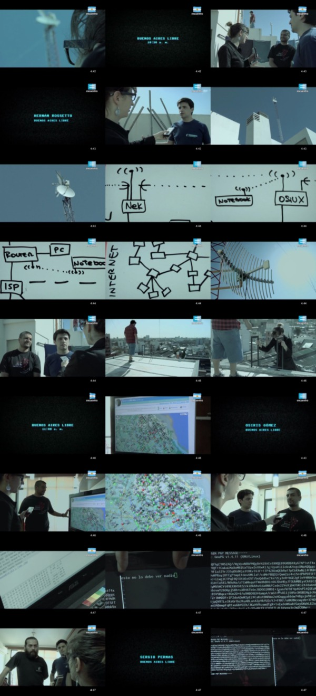

BuenosAiresLibre en el medio digital
ABSOLUTELLY NO WARRANTY | CC-BY-SA | OSiUX | blog | docs
En coincidencia con la conmemoración de la revolución del 25 de Mayo, hoy a las 22hs por Canal Encuentro 1, en el ciclo en el medio digital 2 se transmitirá el episodio Internet: comunicación del cual participa el proyecto BuenosAiresLibre 3 que es una revolución tecnológica, una red libre, abierta, autónoma e independiente gestionada por sus propios usuarios de manera comunitaria con un esquema organizativo horizontal.
Si bien quedó mucho material por mostrar, se presenta como una alternativa de conexión en la ciudad de Buenos Aires y que es al mismo tiempo un modelo posible de implementación para otras ciudades y países, formando parte de las diversas RedesLibres 4 de latinoamérica

Levantá tu nodo de BAL y aprendé a formar tu propia red libre!
Sábado 02 de Junio - Taller en Hacklab Barracas
Viernes 08 de Junio - Reunión en LaTribu, Lambaré 873